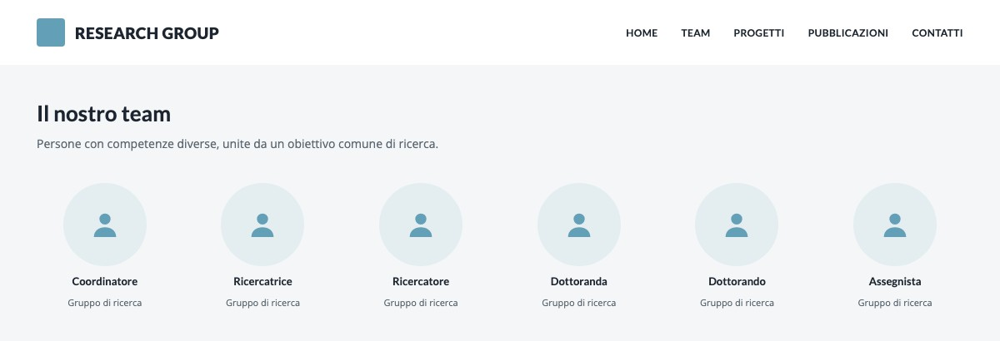
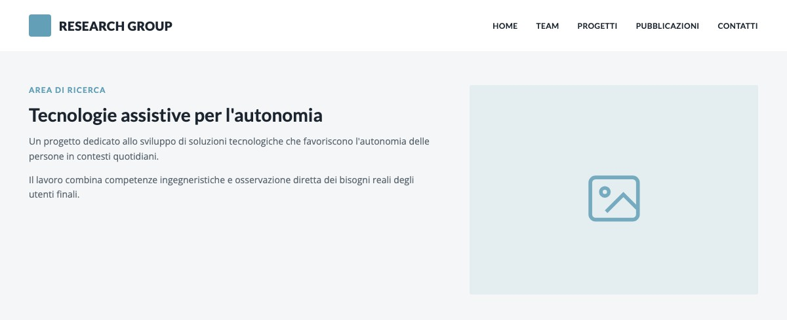
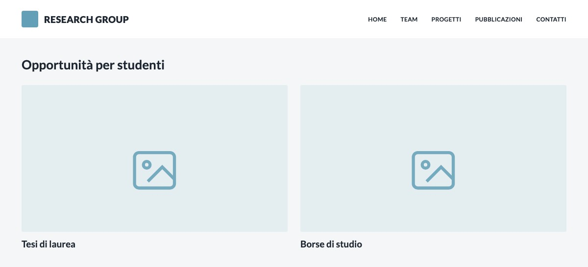

Sito per un gruppo di ricerca universitario
Dare struttura a persone, progetti e conoscenza scientifica.

In breve
Un gruppo di ricerca universitario mi ha affidato la progettazione e la realizzazione del proprio sito istituzionale. La sfida era organizzare contenuti scientifici articolati e renderli comprensibili a ricercatori, studenti e potenziali partner. Ho seguito personalmente tutte le fasi del progetto, collaborando con un professionista nel settore del Marketing, dall'analisi dei contenuti alla pubblicazione e alla manutenzione.
La sfida
Il sito doveva rappresentare competenze diverse e raccogliere presentazione istituzionale, persone, aree di ricerca, progetti, pubblicazioni, attività didattiche, opportunità per studenti e contatti. La complessità non poteva essere eliminata: doveva essere trasformata in una struttura esplorabile.
Il mio contributo
Ho analizzato contenuti ed esigenze del gruppo, definito architettura e navigazione, sviluppato l'identità digitale a partire da un logo preesistente, progettato le interfacce desktop e mobile e curato revisione, organizzazione e inserimento dei contenuti. Ho infine sviluppato e configurato il sito in WordPress, seguendo responsive design, accessibilità, SEO e manutenzione.
Decisioni chiave
Organizzare il sito attorno alle intenzioni di visita
La struttura risponde a cinque bisogni: capire identità e missione, conoscere le persone, esplorare i progetti, consultare le pubblicazioni e trovare attività o opportunità. La homepage orienta verso queste aree; le pagine interne riducono gli elementi visivi per favorire la consultazione.

Rendere confrontabili progetti diversi
Le attività sono organizzate per area di ricerca. Le pagine di dettaglio adottano moduli flessibili, capaci di accogliere quantità differenti di testo, immagini e riferimenti scientifici senza perdere coerenza.
Separare i contenuti per gli studenti
Tesi, attività didattiche e opportunità sono raccolte in uno spazio dedicato e raggiungibile dalla homepage. La separazione aiuta un pubblico specifico a individuare rapidamente informazioni operative.


Bilanciare tecnologia e leggibilità
La direzione visiva riprende i colori del logo esistente. Aperture più immersive comunicano il carattere scientifico del gruppo, mentre le sezioni informative usano superfici chiare, tipografia essenziale e spazio bianco.
Risultato e riflessione
Il risultato è un sito istituzionale completo e aggiornabile, capace di riunire identità del gruppo, produzione scientifica, progetti e opportunità in un unico sistema. Il progetto mi ha permesso di coordinare in autonomia progettazione, contenuti, implementazione e manutenzione nel rapporto diretto con un'organizzazione accademica.
Quando molti contenuti hanno pari importanza, progettare non significa ridurli arbitrariamente: significa costruire relazioni, priorità e percorsi che aiutino pubblici diversi a trovare ciò che serve.